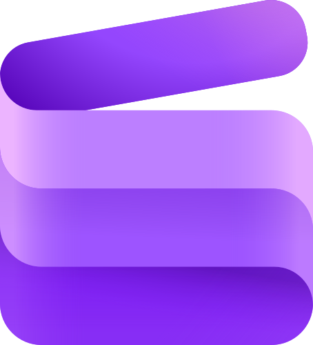

Microsoft Clipchamp
Vídeo · Serviço onlineEdite vídeos, gere narração por IA e adicione legendas automáticas no navegador.
Condições e fonte
Editor gratuito com recursos de IA. Inclui ferramentas de edição de vídeo/áudio com IA; exportação 4K, acervo premium e kit de marca são pagos. Recursos de IA estão sujeitos às condições do serviço. Conta Microsoft pessoal necessária. É um editor com recursos de IA, não uma promessa de gerar um vídeo inteiro por prompt; exportação em 4K exige plano pago.
Consultar fonte oficial ↗